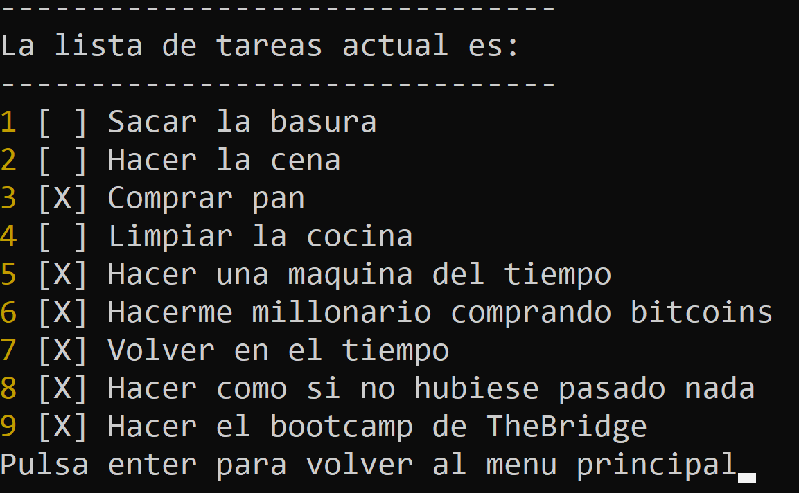
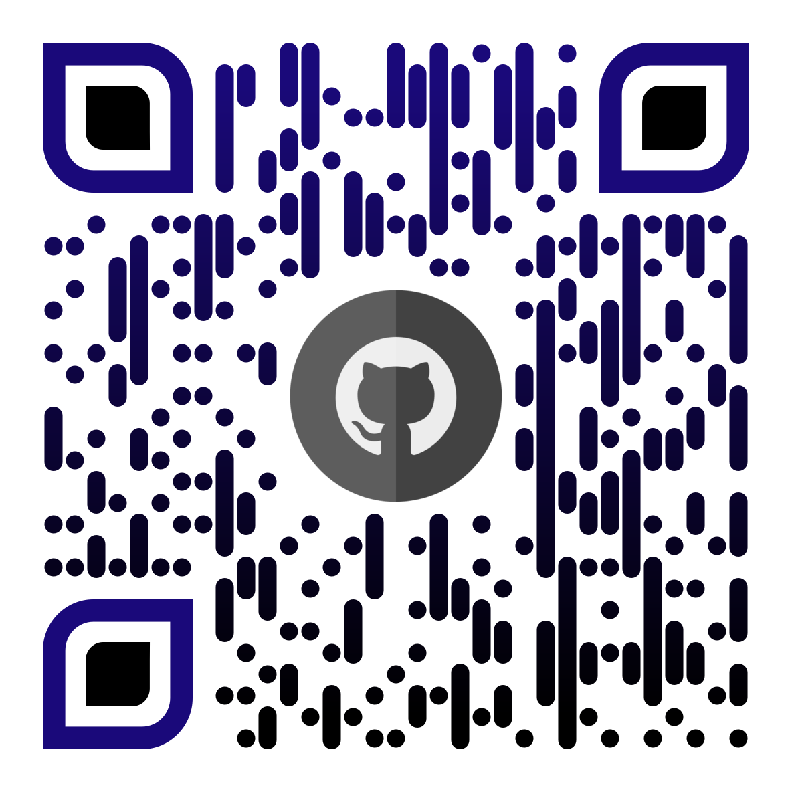
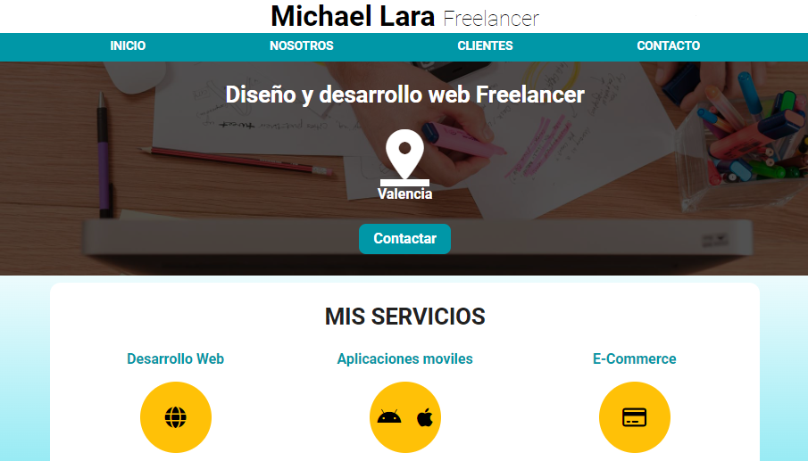
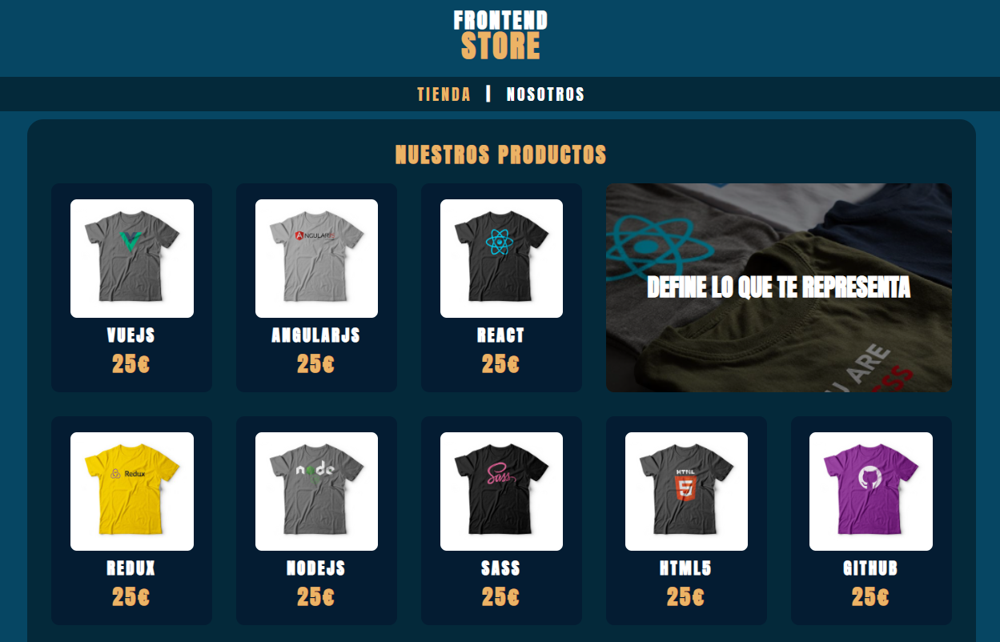
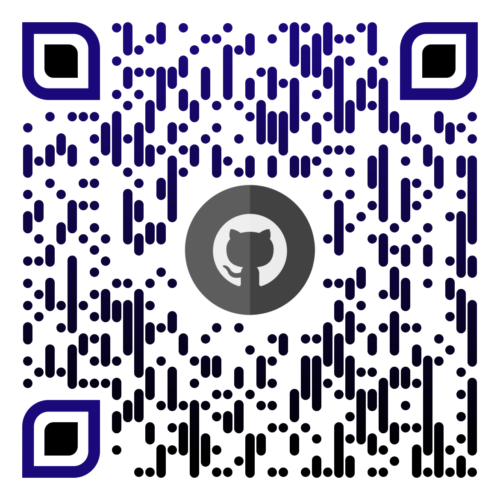

Portfolio

Taskr
Fue mi primer proyecto realizado en el lenguje de JavaScript, es una ToDoList que corre usando el comando node index.js desde la terminal, todo su funcionamiento es desde la misma terminal, su unica interfaz grafica esta generada por texto.



FrontEnd Store
Tienda ficticia, donde empece a controlar el sistema de autogrid, con lo que consigues ahorrar muchas lineas de CSS en Media Queries.
